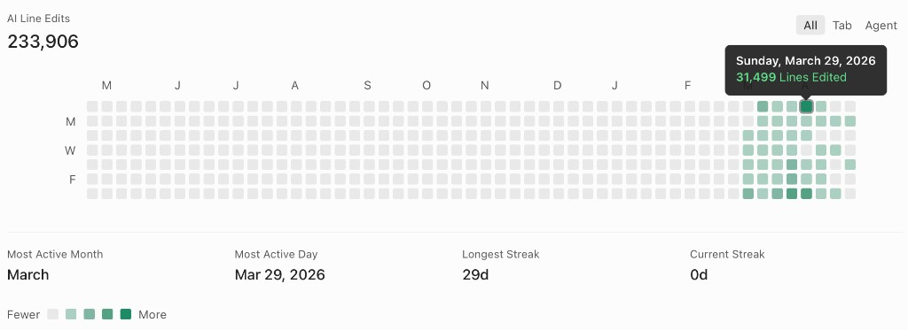

Nudge
Origin
The best product advice I kept receiving was simple: solve a problem you actually live with. Not a hypothetical, not a gap in the market you read about, something real, something personal. For me, that problem showed up over Christmas, organising padel with a group of mates.
I organised every session. By January, I had no idea who had paid, who hadn't, and had no appetite for chasing a group of mates I'd known most of my life. The person who did all the organising was somehow also the one doing all the chasing. That became the seed for Nudge.

"The most valuable skill of the 21st century is knowing what to do with AI." Pedro Domingos
Nudge was born at the crossover of 2025 and 2026, right at the peak of my curiosity about what AI could actually do in a product, not just generate text, but handle the uncomfortable, repetitive human moments most apps ignore. The kind of friction people don't talk about but deal with constantly.
Build
I'd built apps before. A football grounds tracker that never shipped, but taught me everything I needed: where I cut corners, what I'd do differently, how to think about architecture before writing a single line. Nudge was where those lessons got applied.
My early apps had a recurring flaw. Beautiful interfaces. Zero infrastructure. I'd pour everything into the frontend, the kind of UI that could genuinely keep someone coming back, and then hit a wall the moment I needed anything to actually persist. No users, no data, no backend. A stunning shop front with nothing behind the door.


With Nudge, I made a deliberate call to flip that entirely. Backend first, frontend later, even though every instinct I had was pulling me toward the design work. I sat with the unglamorous stuff: databases, auth flows, relational structure, the plumbing that nobody sees but everything depends on.
Infrastructure
The backend is the 2026 equivalent of a receptionist. Nobody notices it when it's working. Everyone notices it when it's not.
What surprised me was how quickly it clicked. The concept of a relational backend, users connected to friends, friends connected to groups, groups triggering notifications, is surprisingly intuitive once you stop thinking of it as infrastructure and start thinking of it as a model of how people actually interact. It maps to real life. That realisation made it far less intimidating than I'd built it up to be.
Using Supabase as the foundation was a deliberate choice for scalability. This wasn't going to be a shell, it needed room to grow. Within roughly a day, the core was live and tested: user authentication, friend connections, communities and teams, and a notification layer all operational on a basic app shell.

Design
I came into the frontend with confidence. Design had always been my thing, the part of any project I gravitated toward, the answer I'd give when someone asked what I enjoyed most about marketing. Visuals, layouts, making something feel considered. I thought this was going to be the reward for getting the backend out of the way.
I was wrong. Not about the design, about the scale of it.
Building an iOS app isn't designing a few screens. It's designing every screen, every state, every decision a user could possibly make. Layer after layer after layer, each one revealing another underneath.
Joining a team, sending a nudge, handling edge cases, writing a privacy policy. None of it appears by accident. User experience design is strategic thinking dressed up as simplicity. The cleaner something feels to use, the more invisible work went into it. The very website you're reading this on is a good example. What looks simple on the surface has a lot of thought behind the animations and interactions. That principle runs through everything I build.
That gap between how effortless something looks and how deliberate it actually is, I didn't fully appreciate it until I was deep inside it. What this process taught me was empathy as a design tool. You have to consistently step outside your own understanding of the app, where the buttons are, what the flows mean, and inhabit the perspective of someone opening it for the first time. That mental shift is a skill, and it takes time to develop. I'm a better product thinker for having been forced to learn it.
Stack
I didn't start with Cursor. I started where most people start, with Lovable, then Replit. Genuinely useful places to begin and I'd recommend them to anyone finding their feet. Could someone pick up Lovable today and build an app? Yes. The idea is what matters most. But there's a ceiling, and I hit it faster than I expected.
I remember going round in circles on frontend problems, making the same requests in slightly different ways, not really getting anywhere. That friction was the signal. Not to give up, but to move up. So I jumped to Cursor.
The difference was immediate. It wasn't just a better tool, it was a different kind of creative freedom. The ability to switch between models depending on what I needed meant I could treat each one like a specialist rather than a generalist. Gemini for UI inspiration and visual thinking. Claude for backend logic and structure. Having the right model for the right job changed the quality of what I was producing almost overnight. Cursor's own Composer 2 filled the gaps when credits ran low — more capable than it gets credit for.
There's a broader point here too. New models are dropping weekly, each one supposedly surpassing the last. That used to feel like something to be anxious about, a treadmill you could never quite keep up with. Now it feels like an advantage. I know the models, I know their strengths, I know how to get the best out of them. That knowledge compounds in a way that generic AI literacy simply doesn't.
Output

The best work I've ever done hasn't come from forcing myself to sit down and grind. It's come from the point where I stop having to. When a project stops feeling like something on a to-do list and starts being all you think about, that's when the output changes completely. Nudge hit that point quickly.
I wasn't showing up to build because I had to. I was showing up because I genuinely couldn't think about much else. That's a different gear entirely. The kind that's hard to manufacture and harder to fake.
29th March 2026 was the day Nudge moved furthest, fastest. 31,499 lines of code added and amended in a single day. Take out six hours of sleep and that works out at roughly 1,750 changes an hour, 29 lines a minute, one line every two seconds for eighteen hours straight. Not mindless output either. Every option considered, every decision made, learning continuously the entire way through.
Features
No build is a straight line. There were features that came to me instantly, ones where the idea and the execution just aligned and an hour later it was done. There were others I was genuinely proud of, things I hadn't seen done quite that way before. And then there were the ones that humbled me completely, the ones I sat with for days, that broke and rebuilt and broke again before finally clicking. Below is an honest look at a few of each.
A gentle push, prod, or shake, often using the elbow to attract attention, or a subtle, non-coercive intervention in behavioural science designed to influence choices without restricting freedom of choice.
The Nudge itself required more thought than you might expect for something that sounds, on the surface, like a notification. The immediate problem: what happens if someone turns notifications off? For most apps that's an inconvenience. For Nudge, it would make the whole thing pointless. So I had to think about this differently.
The Nudge had to have value for the person receiving it, not just the person sending it. This is built for the half-swipe Snapchat crowd, the people with read receipts turned off, the ones who have quietly mastered the art of not responding. The goal was to give them a frictionless, low-pressure way to know they owe someone money without it ever needing to become a conversation in a group chat. No awkwardness, no drama, just the information they need delivered in a way that doesn't feel like a formal invoice from a bank.
The language I chose for the Nudge notification was deliberate. Informal enough that it doesn't feel threatening, specific enough that you know exactly what you owe and why. That balance took some work to get right.
Notifications sit right at the heart of how Nudge works, which made it all the more frustrating that this was another one that demanded time before it gave anything back. Not complex in the way a tricky frontend problem is complex. Just slow, methodical, unglamorous setup work. The kind where you're not really seeing anything come to life, you're just configuring things and hoping it all connects.
When it did connect, the first test was immediately obvious. Send a Nudge to a team of 20 people and 20 notifications fire at once, one for every member. My phone absolutely buried under a stack of its own alerts. Useful proof that it worked. Not exactly the refined experience I had in mind.
This is the one I assumed would just work. Genuinely. My first app, a habit tracker, because of course it was, I set up all the pricing, monthly subscriptions, lifetime options, the works. Then built it, loaded it onto my phone and fully expected to tap purchase and watch money appear. Maybe materialise on the desk in front of me. Instead, nothing. Absolutely nothing happened.
That naivety was actually useful in hindsight. It made me properly learn it rather than stumble through it. With Nudge, in-app payments became one of the most time consuming parts of the entire build, not because the concept was complicated but because the admin, the setup, the Apple configuration, the testing, all of it demanded patience in a way that frontend work simply doesn't.
But there's something about the things that take the longest. When they finally land, nothing else in the build comes close. I remember the moment I pressed pay and the Apple paywall slid up from the bottom of the screen. That sheet appearing was genuinely one of the best moments of the entire project. I don't think I've ever been so happy to see a paywall in my life.
With most apps I've built in the past, gamification was always part of the thinking. Badges, streaks, rewards, anything that earns a little dopamine and keeps someone coming back. But Nudge is a different kind of app. Time spent inside it is not the goal. That's actually the point. If Nudge is doing its job, you barely need to open it.
So profiles became deliberately simple. Clean, functional, nothing unnecessary. No badges to collect, no activity streaks to maintain.
Teams were a completely different story. What looks straightforward on the surface opened up into one of the deepest parts of the build. Every possible journey had to be accounted for, including the ones users will hopefully never need.
Iteration
One piece of advice that has stuck with me through all of this: just start. It doesn't matter if you go in the wrong direction. Going the wrong way at least tells you something, and in design that information is everything. Iteration isn't a fallback plan. It is the plan.
The progression below tells its own story. My username on the first concept was Tractor. Tractor was my first word. Twenty-five years later, starting something new with no idea how it would turn out, that's what came back. I had no idea what I was doing either time. Both times I went anyway.
 First concept
First concept
 Launch-ready
Launch-ready
The distance between those two screens is the whole story. Every lesson, every mistake, every late night of unglamorous config work — it's all in there. Nudge is still moving. So am I.